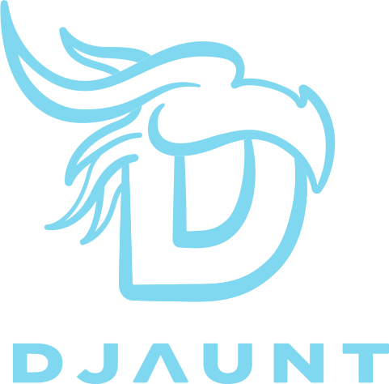

One system prompt. One set of skills. Clone this repo on any machine, run one script, and Claude Code, Gemini CLI, and Cursor CLI are instantly configured — same standards, same slash commands, everywhere.
The same global instructions and skill set reach every supported tool, deployed by a single script.
| Agent | Mechanism | Status |
|---|---|---|
| Claude Code | Native skills — ~/.claude/skills/ symlinks straight back to this repo |
Supported |
| Gemini CLI | Assembled — sync.sh inlines every skill into ~/.gemini/GEMINI.md |
Supported |
| Cursor CLI | Native commands — one file per skill in ~/.cursor/commands/ |
Supported |
src/AGENTS.md is the shared system prompt. src/skills/ holds every slash command. sync.sh deploys both to whatever's installed on the machine.
Skills natively. ~/.claude/skills/ is a symlink chain back to the repo — edits are live immediately, no re-sync needed.
No native skill system. sync.sh inlines AGENTS.md plus every skill's gemini.meta trigger into one GEMINI.md.
Native commands. sync.sh copies each skill body, frontmatter stripped, into ~/.cursor/commands/*.md.
Each skill is a self-contained folder under src/skills/ — a SKILL.md plus, for Gemini, a trigger note.
Kick off the full engineering workflow for a new feature.
Test-driven bug investigation workflow.
Engineering workflow for refactoring or tech debt.
Synthesizes research into a strategic product document.
Comprehensive code review of a branch, diff, or files.
Importance-ranked manual test plan with fault-injection scripts.
Anti-slop UI/UX design pass before any interface gets built.
Guided implementation, from Socratic teaching to code-for-review.
Upgrades a prompt for a future session before it starts.
Snapshots the current session so work can resume later.
Reloads a saved session and continues where it left off.
Sets up a repo so Claude Code on the web can run tests and linters.
git clone https://github.com/tory37/djaunt-dot-agents.git ~/src/djaunt-dot-agents cd ~/src/djaunt-dot-agents
mkdir -p ~/.agents/extensions cp ~/my-work-context.md ~/.agents/extensions/work.md
bash scripts/sync.sh